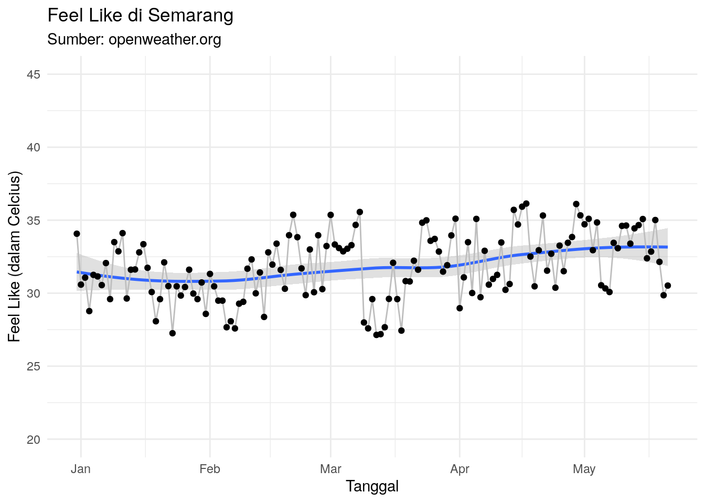
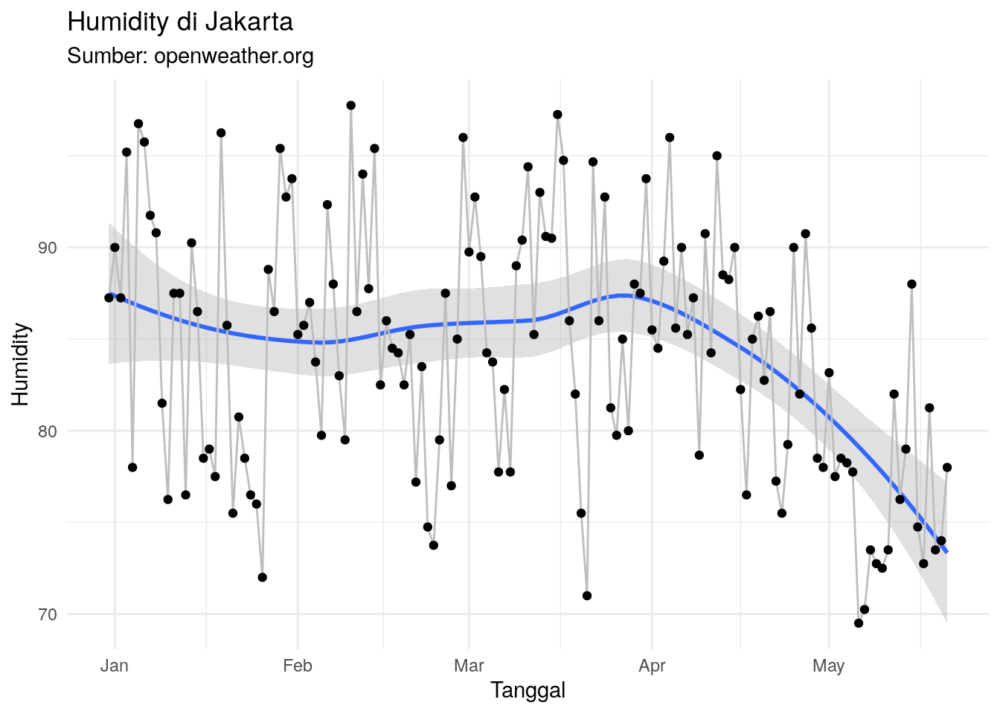
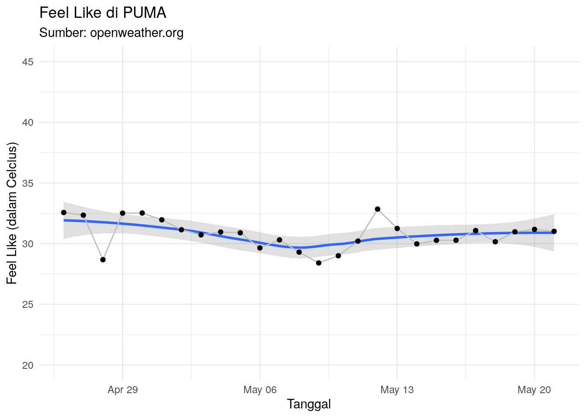
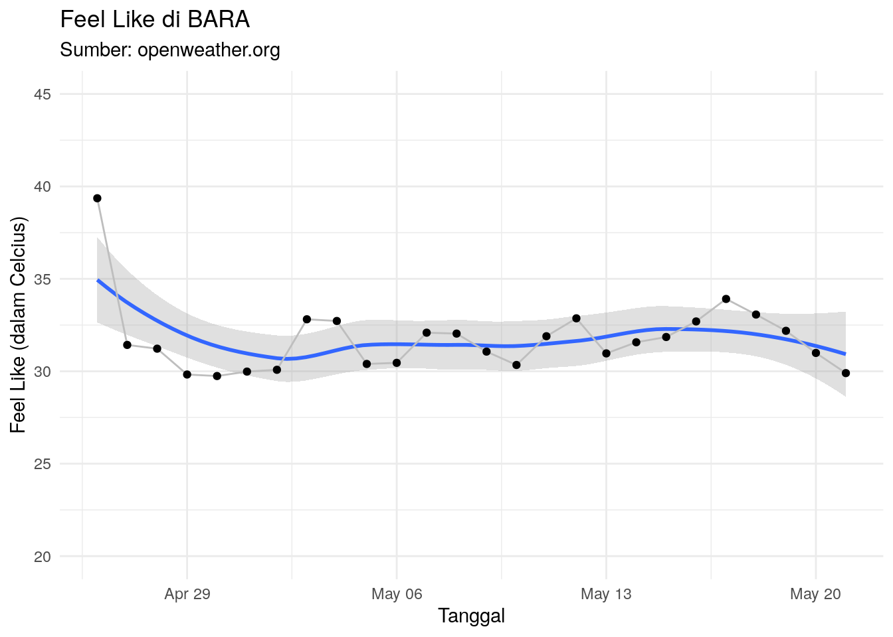
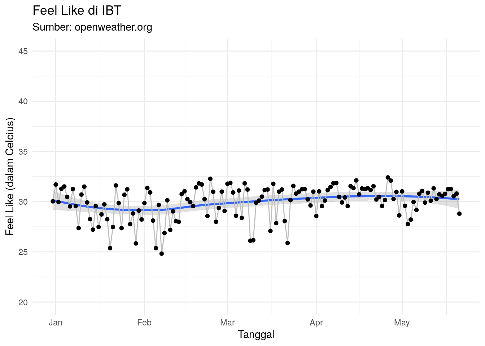
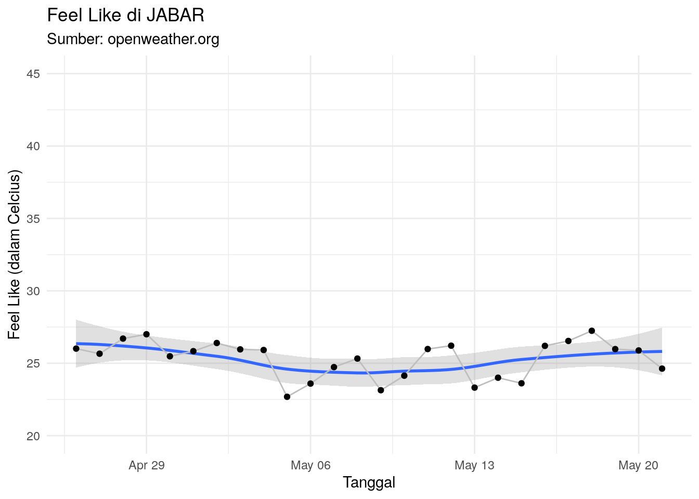
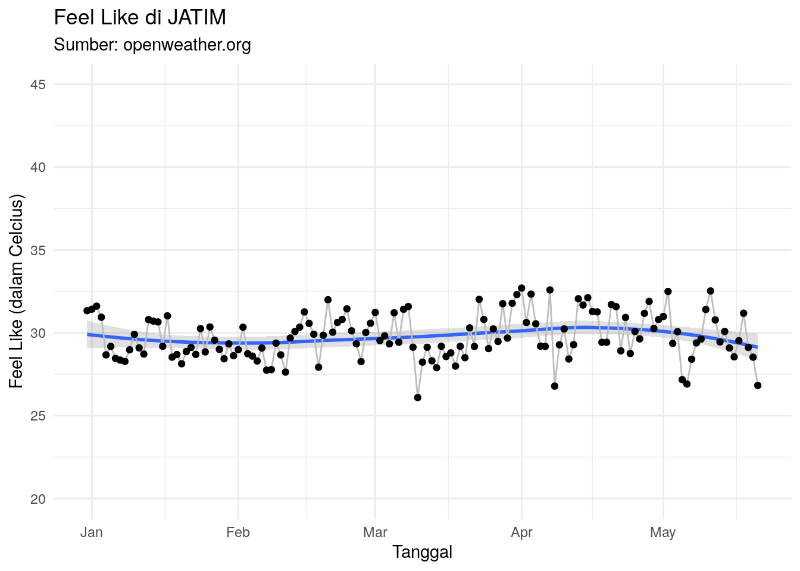
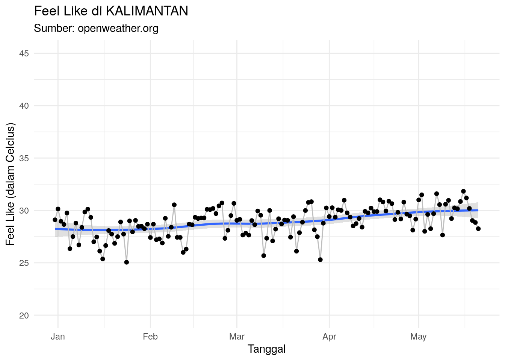

Show me the code!
colnames(df_final)[-1] [1] "kota" "kondisi" "detail_kondisi" "suhu"
[5] "suhu_min" "suhu_max" "feel_like" "humidity"
[9] "lon" "lat" "waktu" Penjelasan Singkat
Tim market riset melakukan pilot project untuk mengambil data cuaca di beberapa kota di Indonesia sebagai tabungan data yang mungkin akan berguna suatu saat nanti.
Temuan kualitatif saat survey terhadap operator makanan dan minuman:
Cuaca panas membuat konsumen membeli minuman seperti NutriSari. Kebalikannya, cuaca dingin membuat jualan minuman seperti NutriSari sepi.
Mengambil data cuaca di beberapa kota di Indonesia.
Data cuaca diambil dari situs Open Weather Map mengandalkan API yang disediakan. Data cuaca yang diambil adalah:
colnames(df_final)[-1] [1] "kota" "kondisi" "detail_kondisi" "suhu"
[5] "suhu_min" "suhu_max" "feel_like" "humidity"
[9] "lon" "lat" "waktu" Kenapa mengambil data cuaca dari situs Open Weather Map? Alasannya:
Berikut adalah kota yang diambil data cuacanya:
Kota-kota yang diambil merupakan representasi dari area-area sales di Nutrifood. Beberapa kota baru ditambahkan setelah lebaran 2024 lalu.
Pada bagian ini, kita akan melihat data cuaca di beberapa kota berikut. Namun saya akan menggunakan data pada waktu jam kerja, yakni pukul 08.00 - 18.00 di kota masing-masing.
Berikut adalah sebaran data di beberapa kota di Indonesia:
bikin_sebaran("Semarang")
bikin_sebaran("Jakarta")
bikin_sebaran("Surabaya")Berikut adalah trend feel like dari beberapa kota di Indonesia berikut:
bikin_grafik("Semarang")
bikin_grafik("Jakarta")bikin_grafik("Surabaya")
bikin_grafik("Solo")
Berikut adalah trend humidity dari beberapa kota di Indonesia berikut:
bikin_grafik_2("Semarang")
bikin_grafik_2("Jakarta")
bikin_grafik_2("Surabaya")
Berikut adalah 10 kota dengan rata-rata feel like tertinggi di setiap bulannya.
list_bulan =
df_final %>%
mutate(jam = lubridate::hour(waktu)) |>
filter(jam >= 8 & jam <= 18) |>
mutate(bulan = lubridate::month(waktu)) %>%
group_by(bulan,kota) %>%
summarise(suhu_mean = mean(feel_like),
suhu_median = median(feel_like)) %>%
ungroup() %>%
group_split(bulan)
list_bulan[[1]] %>% arrange(desc(suhu_mean)) |> head(10) %>% knitr::kable(caption = "Januari 2024")| bulan | kota | suhu_mean | suhu_median |
|---|---|---|---|
| 1 | Depok | 31.52693 | 31.760 |
| 1 | Tangerang Selatan | 31.19168 | 30.920 |
| 1 | Sidoarjo | 31.02669 | 31.100 |
| 1 | Gresik | 30.96315 | 31.115 |
| 1 | Semarang | 30.79232 | 30.520 |
| 1 | Bogor | 30.58766 | 31.310 |
| 1 | Jakarta | 30.26211 | 30.080 |
| 1 | Tangerang | 30.19167 | 30.050 |
| 1 | Bekasi | 29.98045 | 29.285 |
| 1 | Probolinggo | 29.75355 | 29.875 |
list_bulan[[2]] %>% arrange(desc(suhu_mean)) |> head(10) %>% knitr::kable(caption = "Februari 2024")| bulan | kota | suhu_mean | suhu_median |
|---|---|---|---|
| 2 | Depok | 31.71008 | 31.610 |
| 2 | Tangerang Selatan | 31.68156 | 31.330 |
| 2 | Gresik | 31.15560 | 32.120 |
| 2 | Jakarta | 31.14108 | 30.755 |
| 2 | Semarang | 31.11647 | 31.700 |
| 2 | Bekasi | 30.86275 | 30.865 |
| 2 | Tangerang | 30.85537 | 30.510 |
| 2 | Sidoarjo | 30.79842 | 31.100 |
| 2 | Bogor | 30.25397 | 30.525 |
| 2 | Surabaya | 30.17874 | 29.410 |
list_bulan[[3]] %>% arrange(desc(suhu_mean)) |> head(10) %>% knitr::kable(caption = "Maret 2024")| bulan | kota | suhu_mean | suhu_median |
|---|---|---|---|
| 3 | Semarang | 31.72659 | 31.085 |
| 3 | Surabaya | 31.20299 | 31.070 |
| 3 | Sidoarjo | 31.16288 | 31.100 |
| 3 | Tangerang Selatan | 31.11708 | 30.680 |
| 3 | Depok | 30.92832 | 30.530 |
| 3 | Gresik | 30.86065 | 30.800 |
| 3 | Jakarta | 30.50947 | 30.120 |
| 3 | Bekasi | 30.23039 | 29.640 |
| 3 | Bogor | 30.13645 | 30.515 |
| 3 | Tangerang | 30.00109 | 29.530 |
list_bulan[[4]] %>% arrange(desc(suhu_mean)) |> head(10) %>% knitr::kable(caption = "April 2024")| bulan | kota | suhu_mean | suhu_median |
|---|---|---|---|
| 4 | Ambon City | 32.66118 | 33.820 |
| 4 | Semarang | 32.61458 | 32.460 |
| 4 | Tangerang Selatan | 32.56475 | 31.900 |
| 4 | Jakarta | 31.95322 | 31.440 |
| 4 | Tangerang | 31.86941 | 31.740 |
| 4 | Surabaya | 31.81139 | 31.730 |
| 4 | Sidoarjo | 31.71476 | 31.770 |
| 4 | Depok | 31.64525 | 31.180 |
| 4 | Bekasi | 31.52883 | 30.955 |
| 4 | Gresik | 31.47342 | 31.110 |
list_bulan[[5]] %>% arrange(desc(suhu_mean)) |> head(10) %>% knitr::kable(caption = "Mei 2024")| bulan | kota | suhu_mean | suhu_median |
|---|---|---|---|
| 5 | Kupang | 35.45865 | 35.820 |
| 5 | Tangerang Selatan | 33.58508 | 33.280 |
| 5 | Semarang | 33.45933 | 33.450 |
| 5 | Bekasi | 33.21984 | 32.640 |
| 5 | Jakarta | 33.21677 | 32.350 |
| 5 | Tangerang | 32.93889 | 32.910 |
| 5 | Depok | 32.65730 | 32.180 |
| 5 | Solo | 32.63700 | 33.425 |
| 5 | Bogor | 31.74817 | 32.045 |
| 5 | Banda Aceh | 31.71058 | 31.660 |
Pada bagian ini, kita akan kelompokkan semua kota yang ada ke dalam kelompok area sales Nutrifood. Kita akan lihat apakah ada area yang memiliki suhu lebih panas (dan signifikan) dibandingkan dengan area yang lain.
Berikut adalah area sales yang dimiliki Nutrifood:
bikin_grafik("SUM1")bikin_grafik("SUM2")
bikin_grafik("PUMA")
bikin_grafik("BARA")
bikin_grafik("IBT")
bikin_grafik("Jabodetabek")bikin_grafik("JABAR")
bikin_grafik("JATENG")bikin_grafik("JATIM")
bikin_grafik("KALIMANTAN")
Jika terlihat, ada beberapa area sales yang memiliki tren mendatar dan tren yang berubah-ubah.
Pertanyaannya adalah:
Apakah ada perbedaan signifikan suhu feel like antar area tersebut?
Pada pengujian hipotesis kali ini, kita akan gunakan metode statistika non parametrik sehingga tidak perlu pengujian normalitas, cukup menggunakan data as it is.
Tahapan uji hipotesis:
uji = kruskal.test(feel_like~area_sales,df_area_all)
uji
Kruskal-Wallis rank sum test
data: feel_like by area_sales
Kruskal-Wallis chi-squared = 1300.3, df = 9, p-value < 2.2e-16p_val_1 = uji[[3]] * 100
p_val_2 = round(p_val_1,0)Kita dapatkan bahwa p value sebesar 2.6328309^{-272} alias 0 yang berarti tolak \(H_0\).
Ada perbedaan rata-rata feel like di semua area.
Berarti setidaknya ada satu area yang memiliki rata-rata feel like yang berbeda dengan area yang lain.
Untuk menjawabnya, kita akan gunakan Wilcox Text untu menguji rata-rata feel like dari semua pasangan area yang ada.
Berikut adalah hasilnya:
input_func = c("JABAR","JATENG")
hitung_pasang = function(input_func){
df_new = df_area_all |> filter(area_sales %in% input_func)
hasil = wilcox.test(feel_like~area_sales,df_new)
p_val = hasil$p.value
# tulis kesimpulan
kesimpulan = ifelse(p_val < 0.05,"Beda","Sama")
return(kesimpulan)
}
# kita buat summary dulu ya
df_area_all |>
group_by(area_sales) |>
summarise(rata = mean(feel_like)) |>
ungroup() |>
mutate(rata = round(rata,2)) |>
knitr::kable()| area_sales | rata |
|---|---|
| BARA | 31.50 |
| IBT | 29.94 |
| JABAR | 25.05 |
| JATENG | 29.34 |
| JATIM | 29.80 |
| Jabodetabek | 31.21 |
| KALIMANTAN | 28.97 |
| PUMA | 30.60 |
| SUM1 | 28.41 |
| SUM2 | 27.81 |
data_area_pair =
expand.grid(area_sales_new,area_sales_new) |>
as.data.frame() |>
rename(area_1 = Var1,
area_2 = Var2) |>
filter(area_1 != area_2) |>
mutate(area_1 = as.character(area_1),
area_2 = as.character(area_2))
input_list = vector("list",nrow(data_area_pair))
for(i in 1:nrow(data_area_pair)){
input_list[[i]] = c(data_area_pair$area_1[i],
data_area_pair$area_2[i])
}
library(parallel)
n_core = detectCores()
output = mclapply(input_list,hitung_pasang,mc.cores = n_core) |> unlist()
data_area_pair$kesimpulan = output
data_area_pair |>
reshape2::dcast(area_1 ~ area_2, value.var = "kesimpulan") |>
knitr::kable()| area_1 | BARA | IBT | JABAR | Jabodetabek | JATENG | JATIM | KALIMANTAN | PUMA | SUM1 | SUM2 |
|---|---|---|---|---|---|---|---|---|---|---|
| BARA | NA | Beda | Beda | Sama | Beda | Beda | Beda | Sama | Beda | Beda |
| IBT | Beda | NA | Beda | Beda | Beda | Sama | Beda | Beda | Beda | Beda |
| JABAR | Beda | Beda | NA | Beda | Beda | Beda | Beda | Beda | Beda | Beda |
| Jabodetabek | Sama | Beda | Beda | NA | Beda | Beda | Beda | Beda | Beda | Beda |
| JATENG | Beda | Beda | Beda | Beda | NA | Beda | Sama | Beda | Beda | Beda |
| JATIM | Beda | Sama | Beda | Beda | Beda | NA | Beda | Beda | Beda | Beda |
| KALIMANTAN | Beda | Beda | Beda | Beda | Sama | Beda | NA | Beda | Sama | Beda |
| PUMA | Sama | Beda | Beda | Beda | Beda | Beda | Beda | NA | Beda | Beda |
| SUM1 | Beda | Beda | Beda | Beda | Beda | Beda | Sama | Beda | NA | Beda |
| SUM2 | Beda | Beda | Beda | Beda | Beda | Beda | Beda | Beda | Beda | NA |